Внешний вид приложения является нам преимущественно через формы. Формы являются основными строительными блоками. Они предоставляют контейнер для различных элементов управления. А механизм событий позволяет элементам формы отзываться на ввод пользователя, и, таким образом, взаимодействовать с пользователем.
При открытии проекта в Visual Studio в графическом редакторе мы можем увидеть визуальную часть формы - ту часть, которую мы видим после запуска приложения и куда мы переносим элементы с панели управления. Но на самом деле форма скрывает мощный функционал, состоящий из методов, свойств, событий и прочее. Рассмотрим основные свойства форм.
Если мы запустим приложение, то нам отобразится одна пустая форма. Однако даже такой простой проект с пустой формой имеет несколько компонентов:

Несмотря на то, что мы видим только форму, но стартовой точкой входа в графическое приложение является класс Program, расположенный в файле Program.cs:
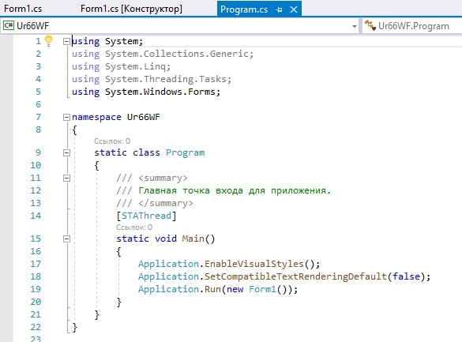
Сначала программой запускается данный класс, затем с помощью
выражения Application.Run(new
Form1()) он запускает форму Form1. Если
вдруг мы захотим изменить стартовую форму в приложении на
какую-нибудь другую, то нам надо изменить в этом выражении Form1
на соответствующий класс формы.
Для проверки этого добавим новую форму, и настроим ее соответствующим образом.
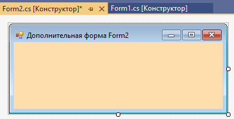
Изменим код для определения главной формы при запуске приложения:
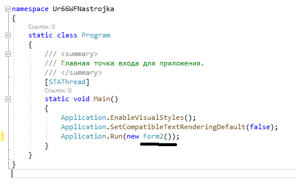
В результате:
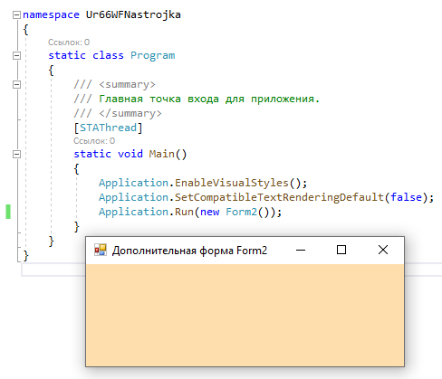
Сама форма сложна по содержанию. Она делится на ряд компонентов. Так, в структуре проекта есть файл Form1.Designer.cs, который выглядит примерно так:
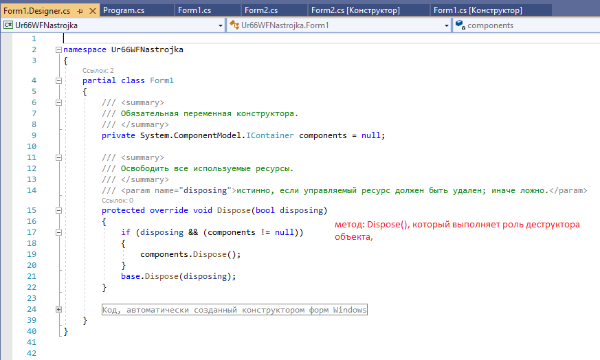
Здесь объявляется частичный класс формы Form1, которая имеет два
метода: Dispose(),
который выполняет роль деструктора объекта, и InitializeComponent(),
который устанавливает начальные значения свойств формы.
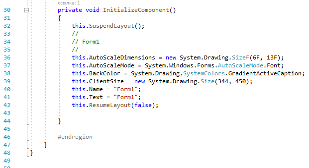
При добавлении элементов управления, например, кнопок, их описание также добавляется в этот файл.
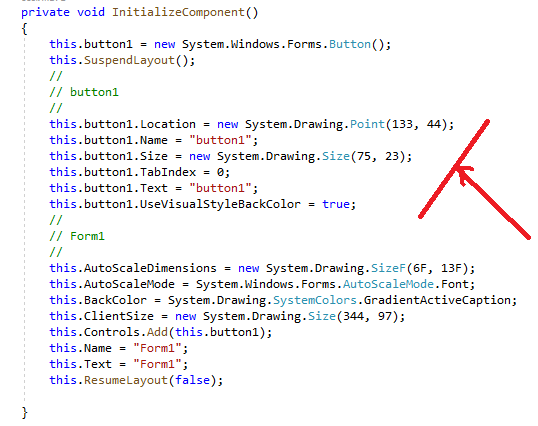
Но на практике мы редко будем сталкиваться с этим классом, так как они выполняет в основном дизайнерские функции - установка свойств объектов, установка переменных.
Еще один файл - Form1.resx - хранит ресурсы формы. Как правило, ресурсы используются для создания однообразных форм сразу для нескольких языковых культур.
И более важный файл - Form1.cs, который в структуре проекта называется просто Form1, содержит код или программную логику формы:
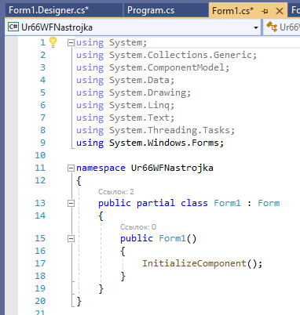
По умолчанию здесь есть только конструктор формы, в котором
просто вызывается метод InitializeComponent(),
объявленный в файле дизайнера Form1.Designer.cs.
Именно с этим файлом мы и будем больше работать.
Например создадим обработчик OnClick по форме
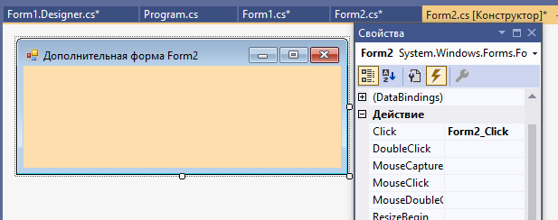
В файл - Form1.cs, добавится метод в который мы запишем следующий код
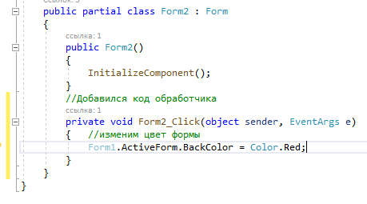
Результат:
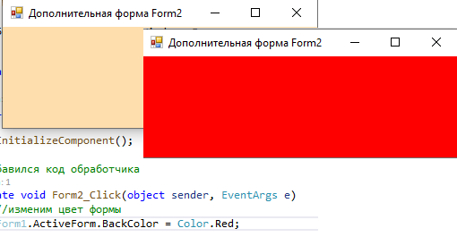